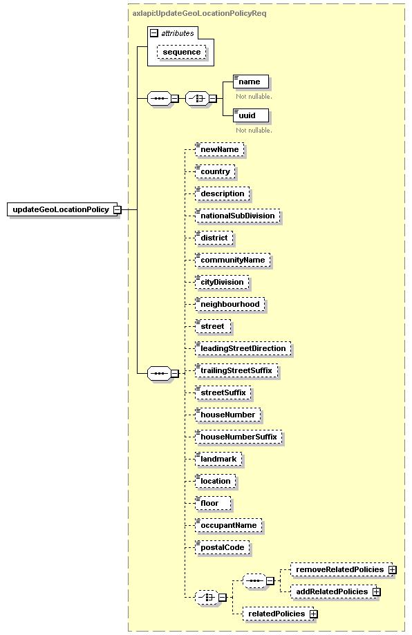

| diagram |  | ||||||||||||
| namespace | http://www.cisco.com/AXL/API/10.5 | ||||||||||||
| type | axlapi:UpdateGeoLocationPolicyReq | ||||||||||||
| properties |
|
||||||||||||
| children | name uuid newName country description nationalSubDivision district communityName cityDivision neighbourhood street leadingStreetDirection trailingStreetSuffix streetSuffix houseNumber houseNumberSuffix landmark location floor occupantName postalCode removeRelatedPolicies addRelatedPolicies relatedPolicies | ||||||||||||
| attributes |
|
||||||||||||
| source | <xsd:element name="updateGeoLocationPolicy" type="axlapi:UpdateGeoLocationPolicyReq"/> |